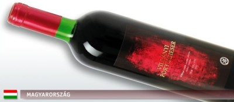
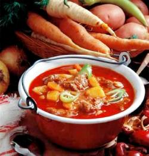
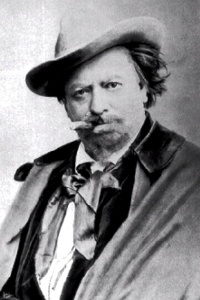
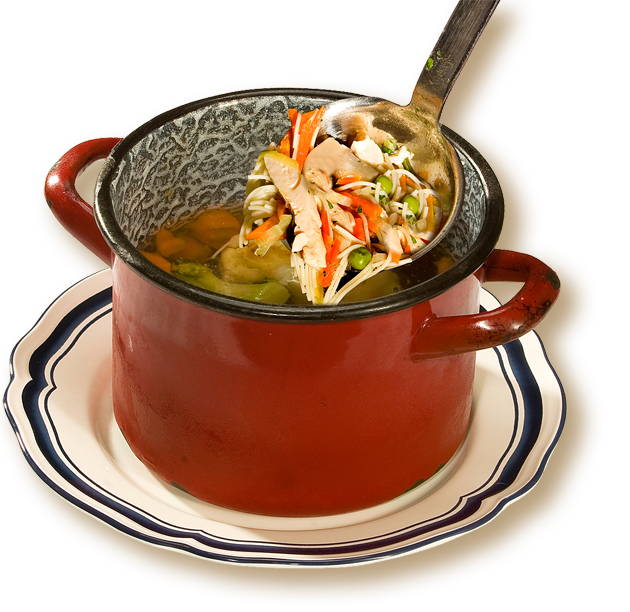
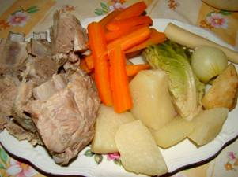
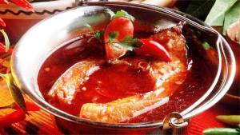

Wir zeigen hier zuerst die
wahrscheinlich einfachsten Suppenrezepte für
KochnfängerInnen, die schnell erlernt werden können und
die Seelen baumeln lassen für die Entwicklung eigener
Aktivitäten in der Küche. Die meisten Rezepte entstammen aus der
Armenküche der Donaumonarchie, sind aber auch heute noch
beliebt bei erfahrenen Hausfrauen und Kochprofis zu Hause, weil man diese Rezepte spontan und
individuell ändern, mit allerlei Zutaten von den einfachsten bis zu den wertvollsten
bereichern kann, je nachdem, worauf man soeben Lust hat
oder was man gerade zur Verfügung
hat.
Mehlschwitze,
Einbrenne /
Rántás
Die Mehlschwitze, auch
Einbrenne genannt, ist allgemein bekannt, dient heute in
erster Linie zur Eindickung von Kochflüssigkeiten und
Saußen. Die Firma Unilever aus Hamburg versorgt den
deutschsprachigen Raum mit Mondaminpulver für den gleichen
Zweck, allerdings schmeckt dieses Zeug anders als
hausgemachte Mehlschwitze und sorgt oft für
Geschmackslosigkeit. Für viele
Verwendungszwecke ist Mondamin überhaupt nicht geeignet, wofür
Einbrenne gedacht ist. Die Einbrennsuppe ist zwar ein
Armutszeichen aus Ären von diversen Nachkriegszeiten und geht
wahrscheinlich deswegen aus der Mode, aber viele
können auf die hauseigene Varianten mit bestimmten Inhalten
nicht verzichten, so gehen wir auf das Thema mit
Mehlschwitze ein.
Vor allem die
heimgekehrten Kriegssoldaten kochten in der Nachkriegszeit
gerne die Einbrennsuppen, entweder weil sie nichts anderes
kochen konnten oder eben die Notzeiten sie zum Sparen
zwangen, als viele nur mithilfe der Einbrennsuppe
überlebten konnten. Viele haben während der 5, 6 oder
7 Jahre dauernden Militärdienst die Einbrennsuppe selbst
kochen müssen, wenn sie was Warmes essen wollten. Not
macht erfinderisch und als die Not allmählich zu Ende
ging, erfand man reichhaltigere Varianten. Solche
Einbrennsuppen möchten wir hier vorführen, bevor sie in
Vergessenheit geraten, weil wir davon überzeugt sind, dass
sie in die Reihe der Schnellgerichten der modernen
Küche gehören. So inhaltreich, wie diese Suppen
heute gekocht werden, dürfen sie nicht in Vergessenheit
geraten. Zuerst zeigen wir hier nur die Zubereitung
der Mehlschwitze, weil viele nur noch Mondamin aus der
Fabrik kennen, aber immer mehr Leute wissen möchten, was
sie in der Tat verspeisen.
Mehlschwitze 1
- Zutaten für Saucen:
50 g Butter, Öl oder Schmalz, 50 g Mehl oder Stärke, 1
Prise Salz.
Zubereitung:
Rühren wie im Video - Hauptsache keine Klumpenbildung.
Mehlschwitze 2
- Zutaten für Suppenbasis:
50 g Butter, Öl oder Schmalz, 50 g Mehl, 1 Prise Salz, 1
Liter Wasser.
Zubereitung:
Rühren wie im Video - Hauptsache keine Klumpenbildung,
abschließend mit Wasser für die Suppe aufgießen.
Mehlschwitze 3
- Zutaten für Paprikaschgerichte:
200 mL Sauerrahm, 1,5 EL Mehl.
Wissenswert: Paprikasch wird ein Fleischgericht erst
dann genannt, nachdem es mit Sauerrahm eingedickt ist. Der
Sauerrahm soll dabei die Schärfe mildern. Mehl muss nicht
dabei sein, aber etwas
Mehl hilft beim Eindicken der Kochflüssigkeit, allerdings schon ein
bischen zu viel von Mehl
kann den Geschmack des gesamten Gerichtes verderben. Die
angegebene 1,5 EL Mehl zu 200 mL Sauerrahm sollte die
Höchstmenge sein.
Zubereitung: Mehl und Sauerrahm in einem
Schälchen mit Gabel oder Schneebesen knotenfrei verrühren und in die Kochflüssigkeit eines
fertigen Fleischgerichtes einrühren.
Croutons /
Pirított kenyérkocka
Croutons gehören als Inhalt in
viele Suppen, angefangen mit der einfachsten Einbrennsuppe
bis zu den höchst angesehenen kulinarischen Suppen der
5-Sterne-Gasronomie, wo für gleichen Zweck immer öfter nur
noch geschmacksneutrale bzw. geschmackslose oder
versalzene Backerbsen aus der Nudelfabrik
verwendet werden, weil dadurch der Arbeitsaufwand der
besser bezahlten KöchInnen reduziert wird.
Einbrennsuppe /
Rántott leves
Die Einbrennsuppe
hat ihren Ursprung im Alpenraum. Sie ist ein Essen für
arme Leute und alte christliche Tradition zu Fastenzeiten.
In Ungarn entstammt das Rezept wahrscheinlich von den Soldaten.
Ob im letzten Krieg oder schon früher bekannt, das weiß
heute niemand. Soldaten mussten sich in den letzten Kriegsjahren diese Kochkunst
aneignen, weil sie sonst kein warmes Essen
hätten, wenn die Lieferung ausblieb. Die Einbrennsuppe mit Kümmel wurde von den
Soldaten meistens mit einer Scheibe Brot oder mit Croutons
verspeist, wenn die Lieferung ankam. Das mögen auch heute noch viele
so und bereiten diese geschmacklich verfeinert und immer
öfter mit diversen Zutaten ergänzt. Die hier im Video vorgeführte Variante mit
eingelassenen Eiern galt schon als eine reichere Variante
des Rezeptes, wenn man Eier zur Verfügung hatte, damals im
Schützengraben als Sonntagsgericht oder an Feiertagen,
falls die Feiertagsration ankam. Traditionell wird die
Einbrennsuppe auch heute noch von Männern zubereitet, ja
sogar an Fastentagen, denn Frauen sind weniger begeistert
von dem einfachen Grundrezept, das das folgende Video
demonstriert:
Zutaten:
1 EL Schmalz, 1 EL Mehl, Kümmel (ganz oder gemahlen), 1
Liter Wasser, 1 EL Salz. Croutons zum Servieren.
Zubereitung: aus Schmalz, Mehl und Kümmel bei
niedrigen Temperaturen eine Helle Mehlschwitze zubereiten.
Mit 1 Liter Wasser aufgießen, salzen und ca. 3 Minuten
kochen. Darauf achten, dass bis zum Aufgießen nichts
anbrennt, auch wenn die Suppe Einbrennsuppe heißt.
Soweit das Grundrezept. Ideen für weitere Zutaten, die
oft mitgekocht werden - bloß nicht alle zusmmen:
Paprikapulver in der
Mehlschwitze. Das Grundrezept ist mehrere Hundert
Jahre alt. Das Paprikapulver wird von den Ungarn etwa
ab 1890 verwendet, es ist allerdings auch heute noch
nicht von allen beliebt.
Zwiebel und/oder Knoblauch -
dazu oft Karotten, Sellerieknolle, Petersilienwurzel
und Kräuter, wie Bohnenkraut, Schnittlauch oder
Petersiliengrün.
Speck oder Schinken.
Allerlei Suppennudeln von den
Stiftnudeln über Zupfnudel und Fleckerln bis zu den
Eiergraupen.
bis zu 5 verquirlte oder
verlorene Eier - letztere werden vermeintlichen
Spitzenköchen neuzeitlich als pochierte Eier genannt.
Brotsuppe /
Kenyérleves
Die Brotsuppe ist vor
allem bei Stadtmenschen fremd - aus der Mode gekommen, weil die
Zeiten vorbei sind, als man das Brot noch selbst backte
und laufend mit ungebetenen Gästen rechnete. Diese Suppe
wurde für die Verwendung der Brotreste ausgedacht und wird mit
Zutaten zubereitet, die man auf dem Lande immer zur
Verfügung hat und mit solchen ergänzt, die gerade eben
da sind. Das folgende Grundrezept hat sich in
Jahrhunderten entwickelt und kann beliebig geändert,
ergänzt bzw. bereichert werden.
Zutaten: 2 Scheiben Brotreste, 50 g
Butter, 1 Gulaschzwiebel, 1-2 EL Mehl, 1,5 Liter
Fleischbrühe, 2 Knoblauchzehen, 3 Eigelbe, 3 EL süße
Sahne, Salz, Pfeffer, Muskat, Koriander.
Zutaten zur Garnierung am Tisch: 2 Scheiben Brot,
1 Bund Schnittlauch.
Zubereitung: Brotreste im Topf in Butter
anrösten. Die feingehackte Zwiebel dazugeben und
mitdünsten. Die Fleischbrühe langsam darauf rieseln und
gleichzeitig das Mehl knotenfrei verrühren. Knoblauchzehen
zerdrücken und dazugeben, ca. 30 Minuten knöcheln lassen.
In einer Suppenschüssel die Eigelbe und Sahne verquirlen
und mit der heißen Suppe übergießen und mit Salz, Pfeffer,
Muskat und Koriander abschmecken.
Servieren: Anröste Croutons (Zubereitung
siehe im nächsten Video) und kleingehackten
Schnittlauch in die Teller streuen.
Fleckerlsuppe /
Lebbencsleves
Fleckerln werden auf Ungarisch
Lebbencs oder Kockatészta genannt, aber diese Suppe
bezeichnen die Ungarn immer als Lebbencsleves. In
Österreich, hier und da in Süddeutschland und der Schweiz
bekommt man Fleckerln als Trockennudel zu kaufen. Am
besten schmecken sie, wenn man sie frisch zubereitet,
notfall kommt man auch mit LaSagnaplatten aus dem
Supermarkt zurecht, wenn man diese für die Fleckerlnsuppe
in 3x3 cm oder noch größere Quadrate bröckelt. Sie müssen
nicht gleich groß sein, quadratisch auch nicht und wenn
sie unregelmäßig groß sind, dann erinnern sie am ehesten an die
handgemachten Fleckerln, wie sie am besten
schmecken.
Das Rezept stammt aus der
KuK-Monarchie und unterscheidet sich von der
Fleckerlnsuppe, die in letzter Zeit von den sog. Bio- und
Gesundheitsgurus im deutschsprachigen Raum als Krautsuppe
mit Fleckerln propagiert wird. Weißkohl bzw. Weißkraut ist
gesund, etwas anderes hört man über Kohlgerichte nicht,
weil die neuartigen Besserwisser in der Küche noch nicht
soweit gekommen sind, dass Weißkohl dem menschlichen
Körper schaden kann. Einerseits entzieht der Kohl Wasser
auf unnatürlicher Weise, das dem Organismus für die
ordentliche Funktion fehlt, andererseits wird die
Jod-Aufnahmefähigkeit durch den Kohl stark reduziert und so die
Schilddrüse gekränkt. Die KuK-Fleckerlnsuppe ist hingegen
kalorienreich, fett und enthält dank Kartoffel und
weiterer Zutaten
wichtige Vitamine. Im Fett enthält diese Suppe das bisher
einzig bekannte Lebensmittel für die natürliche Vorbeugung gegen
Krebs.
Zutaten für 4 Personen: 200 g Fleckerln
(Trockengewicht), 50 g Speck, 2 St. Kartoffel, 1 Zwiebel,
1 TL Paprikapulver, 1 Bund Petersiliengrün, Salz, Pfeffer,
evtl. 1/2 TL Kümmelpulver.
Zubereitung: Den Speck in 1,5 cm Würfel schneiden
und auf halbe Größe ausschwitzen lasssen. Fleckerln und
die kleingeschnittene Zwiebel dazugeben und im Fett
mehrfach wenden: Zwischendurch 1 TL Paprikapulver
dazumischen und mit Wasser überschwemmen. Kleingewürfelte
Kartoffel hineingeben, salzen und pfeffern nach eigenem
Gutdünken. Auf kleiner Flamme/Hitze fertigkochen.
Servieren: Am Tisch
kleingeschnittenes Petersiliengrün und Paprikaflocken zur
individuellen Verwendung bereitstellen.
Tipp: Die genannten Zutaten gehören
zum Grundrezept und können nach eigenen Ideen bzw. was man
gerade zur Verfügung hat, erweitert werden, beispielsweise
mit Schinkenwürfeln, Hartwurstscheiben, Möhren,
Sellerieknolle, Wirsingkohl, Knoblauch.
Linsensuppe kennt man in ganz Europa, sie wird ganzjährig öfter zubereitet.
Ist die Suppe weniger flüssig und enthält mehr Inhalt, dann
spricht man von Linseneintopf. Es ist jedoch eine
alte ungarische Tradition, besser gesagt Aberglaube in ländlichen Gegenden, im Neujahr
zuerst eine Linsensuppe zu verzehren, damit man im neuen Jahr die Chance
auf ein Geldsegen nicht verpasst.
Zubereitung: Die Linsen waschen und übernacht
in Wasser einweichen, Suppengemüse waschen und zerkleinern, dann
weiter wie im Video.
Servieren: Vor der Silvesterparty im Hotel bestellen und am
Neujahrstag frühmorgens im Hotelbett servieren lassen. Wer
nicht abnehmen will am Neujahrestag und frei von veganen
Gedanken ist, isst Wiener Würstchen dazu. Ein Brotkorb mit
Semmeln gehört ebenfalls zum Gedeck.
Grießklößchen
Suppe /
Grízgaluska leves
Grießklößchen sind eine
Hinterlassenschaft der
Donaumonarchie, eher unter den Donauschwaben, weniger bei
den Ungarn bekannt. Die
Grießnockeln werden zwischen zwei
Kaffeelöffeln mit 2-3 - und nicht wie im Video mit bis zu
10 extrem lahmen Handumdrehungen - direkt in die Rinds- oder Hühnersuppe
befördert. So erkennt man ungeübte Kochlaien in
Fernsestudios. Früher nannten die Ungarn
sie Gríznockedli, heute überwiegend Grízgaluschka. Die
Grießklößchen sind gar, wenn sie oben schwimmen.
Dann lässt man sie noch ca. 15 Minuten unter Deckel reifen
- dabei wachsen sie noch gewaltig. Die Zutaten entnehmen
Sie bitte aus dem Video. Auf Mengenangaben
verzichten wir hier, wichtig ist, dass der Klößchenteig
realtiv fest geknetet wird. Anschließend soll der
Teig ca. 20 Minuten ruhen, bevor man sie deutlich
schneller als im Video vorgeführt wird formt und direkt in die
Suppe befördert:
Vermerke zum Video:
Was man im Video mit dem
Mixer macht, das machen wir mit einem Löffel ähnlich
schnell. In der Gastronomie, aber nicht in der
häuslichen Küche benötigt man einen elektrischen
Schneebesen
für den Grießklößchenteig - bei sehr vielen Gästen.
Im Video werden die Klößchen
in eine klare Brühe befördert und somit eine klare
Klößchensuppe zubereitet. Wir kennen sowas nicht, bei
uns werden die Grießklößchen immer in einer Rinder-
oder Hühnersuppe gekocht. Auch von Weichweizengrieß
möchten wir abraten, verwenden sie immer
Hartweizengrieß.
In Ungarn haben wir in
unserer weiten Bekanntschaft vom Grünzeug überall nur
Majoran oder Petersiliengrün gesehen, Schnittlauch und Muskat
mögen in einer klaren Brühe als geschmacksgebende
Komponente wichtig sein, sie verfälschen jedoch den
Geschmack der Rinder- oder Hühnersuppe, die wir mit
Grießklößchen kennen.
Wenn man die fertigen Klößchen
im Kochtopf unter Deckel etwa 5 Minuten lang stehen läßt, wachsen
sie
noch weiter auf die zwei- bis
dreifache Größe.
Die Fleischklößchen sind
eine ideale Suppeneinlage in Kraftbrühen, in die gerne
Möhren, evtl. auch Suppennudeln mitgekocht und schließlich
mit Suppengrün geschmacklich abgerundet werden.
Zutaten für die Fleischklößchen: 500
g Hackfleisch, 2 Eier, Salz, Pfeffer, Majoran, evtl. 50 g
Reis.
Zubereitung: Aus den
genannten Zutaten Fleischklöße formen. Je nach Reissorte und
Reis-Kochzeit den Reis evtl. halbfertig vorkochen. Die
Kochzeit der Klöße beträgt mindestens 20 Minuten.
Leberklößchen
Suppe /
Májgombóc leves
Eine beliebte Suppe in Ungarn,
die in Deutschland praktisch in die Vergessenheit geraten
ist, wahrscheinlich wegen unzähliger Presseberichte über
Schwermetalle in der Leber der Zuchttiere aus der modernen
Agrarindustrie.
Leberklößchen sind
ideale Suppeneinlagen. Kinderhandkuhlen-große Leberklöße eignen sich als
Teil der Garnierung oder z.B. mit Salzkartoffeln als
eigenständiges Tellergericht.
Die Form der Klößchen am Bild
links soll nicht täuschen! Sie sehen aus, wie
Grießklößchen und werden ähnlich hergestellt, indem man
Mehl statt Grieß verwendet und zusätzlich gemahlene Leber vom Huhn oder
Schwein in
die Mehlteigmasse rührt.
Das Rezept demnächst hier:
Landestypische
ungarische Suppen
Schinkensuppe /
Sonkaleves
Die ursprünglich für
den Karsamstag erkorene Schinkensuppe wird heute ganzjährig gerne
verzehrt.
Den Osterschinken kocht man gewöhnlich
am Karsamstag, aber auch zu besonderen Feierlichkeiten. Nachdem
man den fertiggekochten Osterschinken aus dem Topf nimmt, wird der
Sud für diese Suppe mit viel Gemüse weitergekocht. Außer dem Sud
ist alles vegetarisch. In den Sud kommen allerlei Gemüse, wie
Zwiebeln, Möhren, Petersilienwurzel, Sellerieknolle. Als
Suppengrün kocht man viel Bohnenkraut bereits mit den Schinken
zusammen, Selleriegrün kommt relativ früh in die Suppe,
Petersiliengrün erst ganz am Ende und nur kurz. Die beliebtesten Suppeneinlagen sind: Grízes nokedli (Grießklößchen), Nokedli
(Spätzle/Knöpfle), Csipetke (Zupfnudeln) und Kartoffeln. Von Haus
zu Haus unterschiedlich werden diese Einlagen entweder getrennt
im Wasser gekocht oder gleich in der Suppe.
Vermerk: Die genannten Gemüsesorten sind
typisch für viele ungarische Suppen, vor allem in der
Gulaschsuppe. Porree, wie in deutschen
Lebensmittelgeschäften zusammen mit anderen Gemüsen für die Suppe
verkauft wird, ist ein super Geschäft für den Handel, versaut
jedoch den Geschmack der ungarischen Suppen. Wichtige Gemüsesorten
für ungarische Suppen sind: Zwiebeln, Sellerieknolle, Möhren, Petersilienwurzel
(gleich groß, wie größere Möhren). Bloß keine
Pastinaken, die geschmackslose Verwandte der Petersilienwurzeln
sind und daher zum Verwechseln ähnlich
aussehen. Sie sind ideal für Zahnlose, bereichern den Handel, aber
verderben den Geschmack ungarischer Suppen.
Das Rezept und die Zubereitung siehe unter den Osterspezialitäten.
Gulaschsuppe /
Gulyásleves
Zutaten: 500
g Lammfleisch, 3 mittelgroße
Zwiebeln, 1 Batzen Schmalz, 2-3 Knoblauchzehen, 3-4 Paprikaschoten,
2 Tomaten, 1 kg Kartoffeln, 2 Möhren, 1 Wurzelpetersilie, 1/4 TL
Kümmel, Paprikapulver, davon 2 EL edelsüß und 2 TL
rosenscharf, Salz, evt. auch Koriander, Basilikum und Kümmel.
Von Zwiebeln sollte man soviel nehmen, wie vom Fleisch. Sie werden
vollständig zerkocht und dienen in Ungarn als wichtigster
Geschmacksträger der Gulaschsuppe.
Zubereitung: In
einem großen Topf die kleingehackten
Zwiebeln salzen, im Fett goldgelb schmoren,
vom Herd nehmen, Paprikapulver, zerdrückte Knoblauchzehen, das
in kleine Würfel geschnittene Fleisch dazugeben und wenden,
bis auf allen Fleischstücken eine angeröstete Kruste gebildet wird. Kleingeschnittene
Paprikaschoten und Tomaten dazu mischen und würzen. Topf
mit Wasser füllen, bis alles bedeckt ist. Kochvorgang ist
abhängig vom Herd, Topf und vor allem von der Größe der Fleischwürfel, die
gar gekocht werden müsssen.
In Scheiben geschnittene
Wurzelpetersilie, Karotten und die
gewürfelten Kartoffeln dazugeben, 15 Minuten lang
weiterkochen.
Zubereitung im Schnellkochtopf:
...darin ist das Fleisch in 25 Minuten gar gekocht,
anschließend Topf öffnen, abschmecken und nach Bedarf nachwürzen. In Scheiben geschnittene Petersilienwurzel, Karotten und die
gewürfelten Kartoffeln dazugeben. Die Kartoffeln benötigen
die Zugabe von Salz,
weiterkochen. Für das Gemüse ist es unwichtig, ob der
Schnellkochtopf zugeschlossen wird oder nur abgedeckt, die
Gemüse-Kochzeit ist etwa gleich und beträgt ca. 15 Minuten.
Tipp:
Wir kochen regelmäßig im Schnellkochtopf, an Feiertagen
jedoch stundenlang im traditionellen Topf aus folgendem
Grund. Trotz allerlei Versprechungen in den
Gebrauchsanweisungen der Schnellkochtöpfe, das schnell
gekochte Fleisch schmeckt
eintönig und anders, weil bestimme Aromen unterdrückt und andere sich
nicht entfaltet können während der gekürzten Kochzeit. Bei
unseren Bekannten mit ihrem neuartigen Kochautomaten haben
wir in dieser Hinsicht noch schlimmere Erfahrung gesammelt.
Wir meinen, wenn Sie unbedingt viel Zeit und möglichst die
ganze Arbeit ersparen
wollen, pulverisieren sie alles in einem Multizerkleinerer
und kochen das Ergebnis zu einer Brühe zusammen, das ist
dann ideal für Zahnlose, die nicht beißen können und in den
Altersheimen es nicht wagen, sich über das Essen zu
beschweren.
Servieren: Am Tisch sollte ein voller Brotkorb, ferner
Salz-, Paprika-, Pfefferpulversträuer und Chiliflocken zum
individuellen Nachwürzen bereit stehen. Bild rechts:
Behälter für edelsüßen Paprika und Salz.
Gulaschsuppe mit Rindfleisch und Kartoffel, eine jüdische
Gulaschvariante bei
Ilona
in Wien
Gulaschsuppe mit Lammfleisch und Zupfnudel zu Hause beim Chefkoch
einer Landgaststätte
Getränkevorschlag: Vor
dem Essen trinkt man
Házipálinka (Hausgemachtes) oder Aprikosenschnaps
(Barackpálinka) oder den Magenbitter Unicum bei
Rindsfleisch.
Passender Wein: Dunkler
Portugieser aus Villány, Kadarka, Merlot, Stierblut aus
Szekszárd (identisch mit Bordeaux).

Kesselgulasch
/ Bográcsgulyás
Gegenüber der standardmäßigen Gulaschsuppe enthält
Kesselgulasch wesentlich mehr "Inhalt".
Das Bild links zeigt, wie Kesselgulasch in der Puszta von
den Rinderhirten in der freien Natur gekocht wird. Das
Bild rechts zeigt das fertige Kesselgulasch mit den
wichtigsten Zutaten, Zwiebeln, Knoblauch und verschiedene
Paprikasorten.
Ob ganz oder teilweise
in Wein gekocht wird, das ist Ihre Entscheidung. Manche
verwenden Bier, statt Wasser.
Zutaten: 1
kg Lammfleisch, 3
mittelgroße Zwiebeln, 750 g festkochende Kartoffeln,
5 große Möhren, 2 große Petersilienwurzel, 5
Knoblauchzehen, 2 gelbspitze Paprikaschoten, 1
große Tomate, evtl. 5 Schnittlingshalme, 1 Bund
Selleriegrün, 1/2 TL Kümmel, Paprikapulver 2 TL
edelsüß und 2 TL rosenscharf, 1 Batzen Fett, Salz.
Zubereitung: Fleisch
waschen und in 1 cm große Würfel schneiden.
Feingehackte Zwiebeln im Fett anrösten bis sie glasig werden.
Vom Herd nehmen, Paprikapulver, Knoblauch und Kümmel
dazugeben, umrühren. Den Topf wieder auf den Herd stellen,
Fleisch hineingeben, salzen und bei großer Hitze anbraten, dabei fleißig
rühren.
Mit Wasser, Wein oder Bier aufgießen und kochen, bis das
Fleisch gar wird.

Geschälte
Kartoffeln würfeln (gleichgroß, wie das Fleisch),
Möhren und Petersilienwurzel waschen und in Scheiben
schneiden. Tomate schälen und kleinwürfeln, Selleriegrün waschen.
Ist das
Fleisch gar, das Gemüse in den Topf geben und weiterkochen, bis
auch die Kartoffeln gar sind. Selleriegrün abschöpfen und
entfernen.
Der beste Gulachkessel ist nach
unserer Überzeugung von innen emailliert, wie am Bild rechts.
Darauf haftet auch nach Jahrzehnten nichts bei ordnungsmäßigem
Gebrauch. Er ist erhältlich im Onlinehandel, z.B. bei der
Fa. Bornchein.
Die
häusliche Zubereitungauf traditionelle Art zeigt das folgende Video. Was hier unter der
Bezeichnung "Ungarische Gulaschsuppe" vorgeführt wird, das
ist lt. Gourmetkoch Karl Gundel "KESSELGULASCH mit viel
Inhalt".
Wenn ein Koch sich auf den
wissenschaftlichen Weg begibt, sollte man schon vorsichtig
sein mit den Wahrheiten, denn dabei lassen sich die mit
Werbung verbundenen Unwahrheiten erst auf den zweiten Blick
erkennen. Karl Gundel wird auch heute noch als Papst in der
Küche betrachtet, zu seinem verstaatlichten und bei der
Reprivatisierung in andere Hände geschobenem Restaurant, das
heute noch immer als kulinarisch gilt, pilgern sehr viele
Jungköche aus fernen Ländern aus dem einfachen Grund: Ein
Koch wird höher angesehen, wenn er von sich behaupten kann,
er war schon bei Gundel - gemeint ist das Restaurant Gundel
im Stadtpark von Budapest. Das folgende Video zeigt
die häufigste Art der häuslichen Zubereitung der ungarischen Gulaschsuppe
nach dem Rezept für Kesselgulasch:
Wie
jedes Haus sein eigenes Geheimnis hat, so herrschen in jeder
Küche andere Gewohnheiten. Gulaschsuppe kann man so oder so
zubereiten. Kesselgulasch ist jedoch so original ungarisch, wie die
professionelle Köchin sie in diesem Video unter häuslichen
Verhältnissen zubereitet. Je nach dem, was man
jahreszeitlich bedingt grade zur Verfügung hat, wird vom
Inhalt dies oder das nicht
immer mitgekocht, aber das Grundrezept mit allem Drum und Dran ist immer gleich
- wie bei Mama und im obigen Video zu sehen ist. In einem ungarischen Restaurant
bekommt man die Gulaschsuppe nach dem vorherigen Rezept viel
dünner und
mit wenig
"Inhalt", wie der Spitzenkoch Karl Gundel dies beschrieb.
Grundsätzlich gilt für die Gulaschsuppe aus dem Kessel:
Fleisch: Lamm, Schwein, Rind
und sogar Kutteln. Alles ist erlaubt, Hauptsache: rotes Fleisch.
Knochen
können mitgekocht werden - viele mögen am liebsten
dicke Rippen. In Restaurants meidet
man Knochen in der Gulaschsuppe, weil die Art und Weise, wie
der Gast das Knochengerippe am Tisch geniessen kann, angeblich nicht
zur vornehmen Gastronomie des Hauses passt.
Csipetke, wie im
Video gezeigt und erklärt wird, gehört nicht
unbedingt in die Gulaschsuppe. Die Zubereitung von Csipetke ist
besonders zeitaufwändig
und kann durch Spätzle/Knobben bzw.
Nokedli ersetzt werden. Spätzle enthält viel mehr
Feuchtigkeit in sich, als Csipetke, wird nach einiger Zeit
in der Suppe klebrig weich und wird daher in unserem
gesamten Bekanntenkreis - wenn überhaupt - immer getrennt
gekocht und je nach Bedarf individuell zur Gulaschsuppe
gereicht.
Sauerrahm
(Saure Sahne) mildert die Schärfe von Paprika und hilft gegen
Sodbrennen, gehört aber nicht zum
original Grundrezept von Gulasch, sondern zum Paprikasch, das
vorwiegend mit weißem Fleisch gekocht wird. Manche
mögen Gulasch und Gulaschsuppe trotzdem mit etwas
Sauerrahm. Im Übersee kochen Angeber die
Gulaschsuppe im Sauerrahm
oder Wein - da ist nichts mehr übrig vom
Originalrezept,
aber Eva und Zsa Zsa Gabor haben es den Nordamerikanern so
eingeprägt - von wegen Hollywood...
Im Video
wurde alles gezeigt, was in die Suppe kommen kann,
aber vieles davon nicht unbedingt kommen muss. Über die Anwendung von Vegetapulver bei dieser Zubereitung
kann man streiten. Vegeta enthält zwar nur 15% Trockengemüse und dient
als Geschmacksverstärker, enthält aber
natürliche Inhaltsstoffe, die z.B.
im Gewächshausgemüse aus dem Supermarkt
fehlen. Vegeta hilft diese zu ersetzen und ferner damit, dass auch Anfänger in
der Küche schnell zurecht kommen, weniger falsch machen
können. Aber das wichtigste dabei ist, dass das Salz
Steinsalz und kein Meeressalz ist und somit zum richtigen
Gulaschgeschmack beiträgt. Vegetapulver wird in mehreren
Ländern produziert. Aus Kroatien und der Türkei enthält es
Meeressalz und ist daher nicht zu empfehlen für
Gulaschgerichte.
Serviervorschlag:
zusammen mit den Kartoffeln evtl. auch Zupfnudeln (Csipetke) mitkochen,
auf den Tisch kommt immer ein voller Brotkorb.
Getränke wie bei der Gulaschsuppe
....vor
dem Essen trinkt man Hausgemachtes (Házipálinka), Aprikosenschnaps
(Barackpálinka) oder einen Kräuterschnaps, z.B. Unicum.
Passender Wein: Kadarka,
Blaufränkisch
Gulaschsuppe
Wiener Art
/ Gulyásleves bécsi módra
Wie bereits genannt, in Ungarn war Rindfleisch dem Gulyás
(=Rinderhirt) vorenthalten, dementsprechend auch dem Volk.
Pörkölt und Gulyás (in Ungarn immer die Gulaschsuppe)
kochten die Ungarn gewöhnlich aus Lamm-, Schweine-,
Wildschwein- und Kaninchenfleisch, aber nicht aus
Rindfleisch. Wenn die Hauskuh des Bauers hinfiel, wurde
sie zwar gegrillt oder gekocht, aber das gekochte Fleisch
des übralterten Tieres entsorgt und diese Gepflogenheit
galt noch etwa in den 1970er Jahren als Tradition.
Das Rezept für eine Gulaschsuppe aus Rindfleisch erschien
zuerst in einem Kochbuch in Prag, geschrieben für die
jüdische Küche, 50 Jahre später in Wien ebenso und weitere
50 Jahre später in Budapest. Somit gehört Rindergulasch
vor allem in die jüdischen Küche, ist aber Teil der
ungarischen Küche geworden.
Der wesentliche
Unterschied zu ungarischen Pörkölt- bzw. Gulaschgerichten
besteht daraus, dass das Rindfleisch praktisch nur gewürzt
und so in einem schmierigen Sud gekocht wird, ohne die in
Ungarn typischen Gemüseeinlagen, wie Karotten,
Sellerieknolle, Petersilienwurzel und weiteren Kräutern.
Gemeinsam mit ungarischen Suppen ist, dass hier Zwiebeln
und Knoblauch mitgekocht werden, die sich während der
Kochzeit im Kochsud vollkommen auflösen und dieser am
Teller als Sauce dient.
Wir sind froh, endlich mal eine Zubereitung im
Schnellkochtopf präsentieren zu können, so wie bei uns
schon immer alles Gute aus dem Schnellkochtopf kommt. Das
erspart nicht nur Zeit, sondern mach das Essen, vor allem
die Fleischgerichte schmackhafter und durch die kürzere
Kochzeit sollen in den Speisen - lt. Werbung - mehr
Vitamine erthalten bleiben. Ob es tatsächlich so ist,
wissen wir nicht, aber wer sich einmal die Vorteile eines
Schnellkochtopfes kennt, möchte nicht mehr darauf
verzichten. Schnellkochtöpfe werden unterschiedlich gebaut
und beim Gebrauch sollten Sie sich weniger an die
Bemerkungen der Köchin, vielmehr an die Gebrauchsanweisung
Ihres eigenen Kochtopfes achten.
Das Wiener Saftgulasch in einem Schnellkochtopf zubereitet
zeigt das folgende Video:
Zutaten für 2 Personen: 1 Batzen Schmalz,
50 g Butter oder 50 ml Speiseöl, 400 g grob gehackte
Zwiebeln, 1 TL Tomatenmark, 1 Prise Majoran, 400
Rindsfleisch (Wade oder Schulter) in 4 cm Würfeln
geschnitten,
4 gehackte Knoblauchzehen. 250 ml Fleischbrühe, darin 1 TL
edelsüßes Paprikapulver und 1 TL Essig aufgelöst. Im Teeei
oder Gewürzbeutel: 2 Wacholderbeeren, 2 Pfefferkörner, 1
TL Kümmel, 1 zerbrökeltes Lorbeerblatt.
Zubereitung: Butter, Schmalz oder
Speiseöl - oder nach eigenem Gutdünken gemischt - leicht
erwärmen, Tomatenmark untermischen und bei etwas höheren
Temperaturen die Zwiebeln darin unter ständigem Rühren auf
goldgelb anrösten. Knoblauchzehen, 1/2 TL Salz, Majoran
dazumischen, mit der Brühen-Paprikapulver-Essigmischung
aufgießen, das Fleisch dazugeben und bei Bedarf mit
Wasser, Rotwein oder Dunkelbier weiter auffüllen, damit
das Fleisch knapp bedeckt ist. Den befüllten Gewürzbeutel
in den Sud legen und den Schnellkochtopf verschließen.
Gemäß Gebrauchsanweisung für Rindfleisch etwa 30-35
Minuten lang kochen. Nach dem Öffnen ca. 1 EL Mehl
unterrühren, damit der Kochsud zur sämigen Sauce wird.
Durch Rühren eine Klumpenbildung vermeiden. Ohne Deckel
kurz aufkochen.
Servieren: Ein üppig befüllter Brotkorb
gehört auf den Tisch. Evtl. Beilagen sind Bandnudeln oder
Knöpfli, die ungarischen Nokedli. In der jüdischen Küche
werden stets Kartoffeln als Beilage serviert. Ein Bier ist
gerade ideal für die Durstlöschung.
Bemerkungen zum Video:
Die Haut enthält Poren, aber
das Fleisch keine, die sich angeröstet schließen
würden.
Die Zwiebeln lösen sich
vollkommemn auf im Sud, es ist daher egal, ob sie fein
oder grobgehackt werden.
Unsere Zutatenliste und die
Beschreibung der Zubereitung ist etwas anders, etwas
feiner als im Video und beruht auf langjährige
Erfahrung.
Betjarensuppe
/ Betyárleves
Unter Betjaren (betyárok) verstand man früher die im Wald
lebenden Räuber, die die Natur für normale Bürger unsicher
machten. Legenden und Mythen berichten über das lustige
Leben der Betjaren hier und da in verschiedenen
Waldgebieten. In der Tat, gelegentlich spielten sie eine
wichtige Rolle im Leben der Landbevölkerung, die die
Betjaren oft unterstützte, als sie Ärger mit den
Landesherren und deren Steuerbetreibern fürchteten. Sie
spielten sogar eine politische Rolle in der Zeit nach dem
im Jahre 1849 verlorenen Freiheitskampf gegen die
Habsburger Besatzungsmacht. Österreichische Soldaten
verschwanden oft unterwegs in Ungarn. Das Land war zwar
besetzt, aber völlig unsicher für den österreichischen
Adel, der immer öfter auf seine Besitzerrechte verzichten
musste. Das zwang schließlich die Habsburger
Besatzungsmacht zu einem Vertrag (sog. Ausgleich) mit
Ungarn im Jahre 1867. Da das Militär und monetäres System
gemeinsam blieb, wurde Ungarn mit den Habsburgern
gemeinsam zum Eintritt in den ersten Weltkrieg auf Seiten
Deutschlands gezwungen, womit die Ungarn überhaupt nichts
zu tun hatten, hätten sie nicht den gemeinsamen Kaiser und
König.
Heute leben die Waldfrevel und Betjaren
untr uns, meist in
Großstädten und entwickeln Strategien für die sog.
„Wiedereinbürgerung“ der von uns bereits besiegten
(früher natürlichen) Konkurrenz. Immer wildere Waldtiere
werden angesiedelt und der Bevölkerung vorgegaukelt, wie
man sich verhalten muss, wenn man auf Wölfe trifft, sonst
wäre man selber schuld. Es wird bisher verschwiegen, wie
man sich unbewaffnet verhalten soll, wenn diese Wölfe in Rudeln
auf einen zukommen und sie gerade hungrig sind. Die
aktuelle Schadensregulierung ist eine pure Augenwischerei,
die nur Sachkosten, nicht jedoch entgangene Folgeeinnahmen
berücksichtigt, die von Landwirt bereits erbracht worden
sind. So wird die
naturnahe Tierhaltung in der Landwirtschaft von sog.
Naturschützern immer weiter eingeschränkt und dabei
bäuerliche Existenzen vernichtet – koste es was es wolle
und die Politiker schauen zu, weil sie engstirnig nur auf
die Schaffung von Arbeitsplätzen in Ballungsgebieten
fixiert sind, auch wenn sie mehr Schaden anrichten, als
Nutzen bringen, Hauptsache keine Unruhe in den
Großstädten! Dass man sich unbewaffnet in immer mehr
Waldgebiete nicht mehr trauen kann, das stört die meisten
gesetzgeberisch aktiven Politiker nicht, weil sie selbst
von Bodyguards geschützt werden – wie einst die
Landesfürsten, die schon immer etwas zu fürchten hatten.
Zutaten für 4 Personen: 1 kg Kassler Nacken oder Eisbein ca. 2x2 cm
gewürfelt, 300 g Kaiserspeck (geräucherter Bauchspeck) ca.
1x1 cm gewürfelt,
evtl. 1 Batzen Schmalz, 300 g Pfifferlinge oder Champion,
4-5 Möhren, 2-3 Petersilienwurzeln, 2 mittelgroße
Zwiebeln, 500 ml Sauerrahm,
3-4 EL Mehl, 1 Bund Petersiliengrün, 2 ungarische
Paprikaschoten, 2 Tomaten, 1 TL schw. Pfefferpulver 3-4 TL
Gewürzpaprikapulver, 3 TL Salz. Vorbereitung: Möhren, Petersilienwürfel
in Scheiben oder Würfel schneiden. Paprikaschoten klein
schneiden, die Tomaten anritzen und in kochendem Wasser
die Pelle ablösen, danach abziehen und klein schneiden.
Mehlschwitze: in einer Schale mit dem Sauerrahm 3-4 EL
Mehl mit Gabel oder Schneebesen knotenfrei verrühren.
Zubereitung: Den gewürfelten Kaiserspeck anrösten, die
kleingehackten Zwiebeln unterrühren und bei schwacher
Hitze auf goldgelb schmoren. Das Fleisch dazugeben, Salz
und Pfefferpulver darauf streuen und notfalls unter Zugabe
von einem Batzen Schmalz im Fett ca. ½ Stunde lang
dünsten. Die in Scheiben oder Würfel geschnittene Möhren
und Petersilienwurzel und wenig Wasser dazugeben –
weiterkochen und gelegentlich nur so viel Wasser
nachfüllen, dass das Fleisch knapp bedeckt ist.
Ist das Fleisch gar, die in Streifen
oder Würfel geschnittene Pilze dazugeben und das
Paprikapulver unterrühren. Sollten
selbstgemachte Zupfnudeln gekocht werden, diese nach den
Pilzen in die Suppe mischen. Abschließend die Mehlschwitze
langsam in die fertige Suppe
gleiten lassen und unterrühren.
Serviervorschlag: Zupfnudeln
(Csipetke) oder
Nockerli als Beilage. Während die Zupfnudeln in der Suppe
gekocht und zusammen serviert werden, die Nockerli müssen
getrennt gekocht und getrennt in einem eigenen Schüssel
serviert werden. Am Tisch sollten Brotscheiben,
Salz-, Pfeffer- und Paprikastreuer, evtl. Chiliflocken
griffbereit stehen und auch das kleingeschnittene
Petersiliengrün in einem Schälchen zum individuellen
Dekorieren. Bei Bedarf sollte Rotwein - Merlot oder
Portugieser - serviert werden.
Vermerk: Lassen Sie sich nicht
verschaukeln in Ungarn, wenn die Betjarensuppe nach dieser
oder jener Art, meistens nach Puszta- bzw. Tiefebenenart
oder nach Art des Bakonywaldes angeboten wird. Wir haben
viele Rezepte verglichen und finden sie alle gleich,
sicherlich voneinander abgekupfert, wenn auch individuelle
Unterschiede festzustellen sind, je nach Geschmack ds
Kochs oder zuhause bei Mutti. Nicht zufällig werden von
den Supermärkten laufend neue Rezepte "kostenlos"
veröffentlicht (=vorgegaukelt), in die bestimmte
Geschmacksverstärker, Würz- und Hilfsmittel von bestimmten
Firmen gemogelt und in den Himmer gelobt werden. Bereits
mit wenig Erfahrung in der Küche erkennt man, was aus
solchen Rezepten fehlt - meist frisches Gemüse und damit
viele rezepttypische Geschmacksrichtungen.
Suppenteller der Donauschwaben,
darf im Menü bei Hochzeiten nicht fehlen, daher diese
Bezeichnung in Österreich und im süddeutschen Raum, aber
diese Suppe ist weitgehend international. Die Ungarn sagen
einfach nur Tyúkleves bzw. Hühnersuppe dazu. Das Rezept
soll hier als Grundrezept für Hühnersuppen dienen, danach
beschreiben wir eine bekannte Variante, die in Ungarn
besonders vornehm sein soll.
Zutaten:
1,5 kg
jüngeres Suppenhuhn, 50 g dünne Suppennudeln, 40 g
Zwiebeln, 100 g Sellerie, 200 g Mohrrüben, 100 g
Petersilienwurzel, 1 Bund Petersiliengrün, 100 g Erbsen
(Maßangabe: aus der Dose oder tiefgekühlt), 50 g Pfifferlinge, 20 g
Salz, 1/2 Messerspitze weißer Pfeffer, 1/2 Messerspitze
Ingwerpulver.
Vorbereitung:
Huhn waschen und
zerteilen, Brust und Rücken je nach Huhn in 2-3
Stücke. Magen und Herz
gehören deinem besten Freund, dem Jagdhund, das restliche
Fleisch in etwa 2
Liter kaltem Wasser zum Kochen bringen, den Schaum abschöpfen.
Das zerkleinerte
Gemüse und die ganzen Zwiebeln geschält dazugeben.
Würzen und bei geringer
Hitze köcheln lassen.
Zubereitung:
Wenn das Fleisch und Gemüse gar sind, Erbsen und die
gewaschenen, zerkleinerten
Pfifferlinge, das gehackte Petersiliengrün einrühren
und fertig garen.
Serviervorschlag:
Nudeln getrennt im Salzwasser kochen und auf einem
Servierteller getrennt auftischen.
Jeder nimmt seine Nudelmenge und legt diese auf den Tellerboden. Darauf
verteilt
man die Fleischstücke. Abschließend wird die Suppe
mit Gemüse aufgegossen.
Passender Wein:
Lindenblatt, Chardonnay
Ujházi
Hühnersuppe / Újházi tyúkleves
Hühnersuppe nach Art eines
bekannteren Schauspielers aus dem 19./20. Jahrhundert
Von der Heilwirkung einer
Hühnersuppe bei Erkältungen wussten schon die alten Römer,
aber die Zubereitung ist von Haus zu Haus unterschiedlich.
Ein vielfach nachgeahmtes Rezept entwickelte der damals
berühmte Schuspieler Ede Újházi (1841-1915). Er kam vom
Lande und kannte den Unterschied von Frischgemüse und
Fleisch direkt vom Erzeuger und fuhr - lt. Legende - höchstpersönlich gut
200 km von Budapest nach Debreczin, wo er die Zutaten für
seine berühmte Suppenabende besorgte. Der Gockel musste
angeblich mindestens 2 Jahre alt sein - zumindest die
Hahnenkämme, die damals als Delikatesse galten. Es galt in Schuspielerkreisen
als besondere Ehre, von ihm auf eine Hühnersuppe
eingeladen zu werden und die Gäste schauten sich
gegenseitig neidisch an, in wessen Teller wohl der Kamm
und andere Köstlichkeiten vom Hahn landeten. Dementsprechend
galt man als mehr oder weniger wichtigster Gast des Abends.
Nach
einer anderen Legende erzählte er den Köchen bei
Wampetics, wie er die Hühnersuppe mag und wurde danach so
bedient. Im Laufe der Jahre gab er seine laufend neuen
Wünsche bekannt, bis endlich ein so ausgereiftes
Suppenrezept entstand, das jedem Gast schmeckte und
das Restaurant Wampetics im Stadtpark von Budapest dadurch in ganz Ungarn Ungarn berühmt
wurde. Alle sind
sich auch heute darin einig, das sei die beste Art der
Zubereitung einer Hühnersuppe. Leider befindet sich heute diese,
vermeintlich berühmte Suppe auf der Speisekarte von Gundel, dem
Nachfolger von Wampetics, nicht, umso mehr Varianten von Kaviar,
Gänseleber und weitere nicht ungarische Küchenprodukte.

Die
Gaststätte Gundel im Stadtpark von Budapest hieß ursprünglich Klemens, soweit man in den Annalen
bis etwa 1870 folgen kann. Zuerst war es ein Ausflugslokal im
Grünen am
östlichen Stadtrand von Pest, der 1872 in Budapest eingemeindet
wurde. Im Jahre 1889 übernahm der Spitzenkoch Wampetics die
Gaststätte. Das Bild links stammt aus dieser Zeit. Das Hauptgebäude wurde für die Weltausstellung im
Jahre 1896 erweitert, modernisiert. Seitdem galt es in
Künstlerkreisen als vornehm, bei Wampetics gewesen zu sein. Etwa in dieser Ära entstand das
Rezept für die Újházi Hühnersuppe. Genauer weiß man das heute nicht
mehr. Im Jahre 1893 erwarb die Familie Gundel die Gaststätte
Wampetics. Drei
heute hochgelobte Gundel-Generationen lebten damit und wagten eine
Umbenennung in Gundel erst auf NS-Druck im Jahre 1944.
Vorbereitung:Knoblauch, Färberdistel oder Safran,
Pfefferkörner, Pimentkörner und Gewürznelken in ein
Gewürzbeutel einschließen. Das Wurzelgemüse waschen, in
größere Stücke spalten, das Suppengrün waschen und klein
hacken. Den Gockel gründlich waschen. Petersiliengrün
waschen und bereithalten.
Zubereitung:Den Gockel in einen Kochtopf legen und in
soviel Wasser zum Kochen bringen, dass das Fleisch mit
Wasser bedeckt ist. Salzen, Tomate, Gemüsepaprika,
Wirsingkohl in ganzen Stücken in die Suppe zugeben.
In einem anderen Topf den Blumenkohl und die grünen
Erbsen kochen. Als Kochflüssigkeit nimmt man etwas aus dem
Suppentopf. Sind diese gekocht, zur Seite legen, warm
halten.
Ist der Gockel fertiggekocht,
aus der Suppe nehmen und zerstückeln, dabei die größeren
Knochen und die Haut entfernen. Gewürzbeutel nun aus der
Suppe nehmen und entsorgen. Nach dem Originalrezept sind
Wirsingkohl, Tomate, Gemüsepaprika und Zwiebel ebenfalls
zu entsorgen, aber manche mögen diese als Suppeneinlage.
Es liegt an Ihnen, was Sie damit machen. Nach dem
Originalrezept wird der Gockel nach 3 Stunden weich, das
war gerade der Grund dafür, dass der Schauspieler älteren
Gockel bevorzugte. Während so langer Kochzeit bei kleiner
Hitze vermengt sich der fettige Schaum in der Suppe. Kaufen
Sie jüngeres Huhn, haben Sie ein Problem damit und
versuchen dieses Fett zu entsorgen, dabei enthält dieses
Hühnerfett die wichtigsten Wirkstoffe, die unser Körper
benötigt...
Die Suppennudeln in einem
separaten Topf weichkochen, abspülen und alles in eine
Suppenterrine geben.
Serviervoschlag: Das Petersiliengrün klein hacken
und am Tisch zur individuellen Verwendung bereitstellen.
Passender Wein: Lindenblatt,
Chardonnay
Alle Hühnersuppen schmecken am besten frisch gekocht und
heiß. Der Gast wird mit
Újházi
Hühnersuppe
so bedient am Tisch bei
Ilona
in Wien:

Bohnensuppe
Jókai / Jókai bableves
Eine beliebte Variante von
Bohnengulasch mit Eißbein, bekannt nach dem berühmten Dichter,
dessen Frau das Rezept kreiert haben soll.
Bloß nicht daran denken, dass Bohnengulasch mit Erbsen von
Bayern bis Siebenbürgen mit einer ähnlichen Rezeptur
bekannt ist und die Dame aus Siebenbürgen stammte.
Das Rezept entstammt von Rosa
Laborfalvi (1817-1886, geb. Judit Benke aus Laborfalva in
Siebenbürgen), einer adligen Schauspielerin. Sie soll es
nach dem Geschmack ihres Ehemannes, dem acht Jahre
jüngeren Dichter und Prosaerzähler Mór Jókai (1825-1904,
geb. Moritz Jókay) kreiert haben. Wie auch immer, das
Rezept ist heute landesweit bekannt, beliebt und trägt den
Namen eines ebenfalls adligen Literaten, der im Jahre 1848 zwar am
Ausbruch des Aufstandes gegen die schwächelnde Habsburger
Besatzungsmacht mitwirkte, davon jedoch schnell Abstand
nahm, als er die zerstörerischen Folgen des kriegerischen
Freiheitskampfes sah.
Ungarn war schon
immer das größere und militärisch stärkere Land in der
Donaumonarchie, geriet lediglich mit türkischer
Unterstützung ins Gefilde der Habsburger. Der ungarische Adel arbeitete
seit Anfang des 19. Jahrhunderts fleißig daran, auf dem parlamentarischen Weg die
Unabhängigkeit Ungarns zu erringen. Die Hauptstadt Ungarns
mit dem Parlament war damals noch Preßburg, Pozsony auf
Ungarisch, heute Bratislava in der Slowakei. Der
Trennungsvertrag war bereits unterschriftsreif, als
der ärmliche Teil der ungarischen Bevölkerung von
zweifelhaften Revolutzen geleitet den
demokratischen Weg ab dem 15. März 1848 zunichte machte.
Ein Schmarrn ist es, wenn dieser 15. März heute als Tag
der Revolution deklarierter
Nationalfeiertag gefeiert wird, weil der einjährige
Freiheitskampf in den ungarischen Schulbüchern aus
bestimmten Gründen in allen
Details beschrieben, aber auf den gut zwei Jahrhunderte dauernden,
parlamentarischen Kampf der ungarischen Obrigkeit zur
wirtschaftlichen Erhebung des von den Türken zerstörten
Landes und zur Trennung von den Habsburgern nur sporadisch hingewiesen
wird...
In der Tat
zerstörten die Aufständischen Jahrhunderte lang bewährte,
feste Infrastrukturen, plünderten das Land und der hoch
angesehene politische Führer und Schattenkabinettsleiter der Aufständischen, Lajos Kossuth
nach Übersee verschwand, zusammen mit einer
Staatskasse, in die
auch aus dem Ausland so üppig gespendet wurde, dass die
Freiheitskämpfer mit der in Europa weitaus bestbezahlten
Söldnertruppe revoltieren konnten.
Als
Folge des von der Zarentruppe niederschlagenen, moralisch
jedoch gewonnenen Freiheitskampfes musste Ungarn auf der
Seite von Österreich in den von Deutschland initiierten
(Deutsch-Österreichische Polizeigewalt in Serbien), von
vornherein sinnlosen ersten Weltkrieg ziehen und verlor
auf einen Schlag durch den Trianonvertrag im Jahre 1920 ein Drittel seiner Bevölkerung und zwei Drittel seines Territoriums.
Ca. 25% der ungarischen Bevölkerung verließ Ungarn in den,
auf die sog. Revolution von 1848 folgenden sieben
Jahrzehnten. 70 Jahre lang siedelten wohlorganisiert, etwa
eine Million aus Galizien vertriebene Ausländer (10% der
heutigen Bevölkerung) in ein Land mit Gestzeswirrwarr und
ohne
Grenzschutz ein, so ähnlich, wie im Jahre 2015 nur in
einem Jahr in die wesentlich bevölkerungsreichere, von
dem trockenen Alkoholiker Martin Schulz aus Deutschland und
dem luxemburgischen
Steueroasengründer Jean-Claude Juncker wie auch immer regierte EU ein. Auch
wenn man vor dem ersten Weltkrieg noch einen Reisepass
für die Überquerung europäischer Landesgrenzen benötigte, die
weltweite Niederlassungsfreiheit war damals wesentlich
einfacher gewährleistet, als heute in der EU. Es
störte beispielsweise niemanden, dass der Anteil der
Ausländer (aus Ländern von Böhmen über den Balkan bis zum
Bosporus) an der
Gesamtbevölkerung von Wien, in der Hauptstadt der
Donaumonarchie im Jahr 1908 über 80% betrug. Wien wuchs
als Völkerschmelze, wie heute New York, und die
Bevölkerung lebte friedlich untereinander. - Wer kann
heute
so viele Ausländer in Brüssel, Paris oder Berlin vorstellen
in unserer, von oben mit zweiter Stimme und von Lobbyisten
hochgelobten
Demokratie?
Zutaten für 4 Personen: 200 g
trockene Bohnen, 1 geräuchertes Eisbein, 300 g geräucherte
Wurst, 3 Möhren, 2 Petersilienwurzeln, 1 Lorbeerblatt, 2
Knoblauchzehen, 1 Paprikaschote, 1 Tomate, 2 EL Schmalz, 1
EL Mehl, 1 Zwiebel, 1 TL Gewürzpaprikapulver, 1,5 l
Sauerrahm, 2 EL Mehl, 1 Bund Petersiliengrün, 200 g
Zupfnudeln (Csipetke).
Zubereitung:
Am Abend die Bohnen waschen,
einmal aufkochen und übernacht in so viel Wasser
einweichen, dass sie auch noch am nächsten Tag bedeckt
sind, wenn sie auf das dreifache aufquellen. Das Eisbein
knapp bedeckt (evtl. öfter nachfüllen) im klaren Wasser
butterweich kochen.
Am nächsten Tag von der kalten
Brühe das Fett abschöpfen und in einem Topf die in
Scheiben geschnittene Wurzeln in diesem Fett anrösten.
Wird es bräunlich, die Bohnen mit dem Weichwasser und der
Eisbeinbrühe auffüllen. Die in kleine Würfel geschnittene
Paprikaschote und Tomate, die kleingehackte Zwiebel, die
zerdrückten Knoblauchzehen und das Lorbeerblatt dazugeben.
Die Wurst in
Schmalz anbraten, aus dem Bratfett nehmen und in dünne
Scheiben schneiden. Sind die Bohnen gar, vom Bratfett der
Wurst unter Zugabe von Sauerrahm und Mehl eine helle
Mehlschwitze rühren und in die Suppe mischen. Ist die
Mehlschwitze fertig gebunden, das kleingeschnittene
Petersiliengrün und Gewürzpaprikapulver darin verrühren,
die Zupfnudeln (Csipetke) dazugeben, fertigkochen und
abschließend auch die Wurstscheiben kurz mitkochen.
Serviervorschlag:
Das Eisbein in kleine Stücke
schneiden und in einer Servierschale anbieten. Beim Servieren zuerst diese in die leeren
Teller geben und die heiße Suppe darüber gießen.
Passender Wein:
Lindenblatt, Szamorodni aus Tokaj.
Karkassensuppe /
Orjaleves
Karkasse entstammt aus dem
französischen "Carcasse" und bedeutet ausgelöstes Gerippe.
Gemeint ist im Allgemeinen das Knochengerüst vom Geflügel.
In Ungarn kommt das Gerippe von allen Tierarten in Frage,
überwiegend von Huftieren. Namensgebende Komponente dieser
Suppe ist die Wirbelsäule, auf Ungarisch Orja. Diverse Knochen mit
mehr oder weniger Fleischanteil, vor allem grob ausgenommene Koteletten
und Rippen gehören in die Suppe, aber auch die
Beinscheiben und das Suppenfleisch vom Rind, Ochsenschwanz
und Putenhals (Bild links) werden gerne
mitgekocht. Bei viel mitgekochtem Fleisch spricht man
schon eher von
einer Fleischsuppe. Hat man viel vom Gerippe abgeschabt,
so spricht man von einer Karkassensuppe bzw. Orjaleves auf
Ungarisch.

Größere Knochen mit
wenig Fleisch werden stundenlang
gekocht, andere kürzer, bevor man eine möglichst große
Anzahl von Gemüsesorten mitkocht. Putenhals benötigt eine kaum längere Kochzeit, als das
Gemüse, Schweine- und Rinderknochen umso mehr. Besonders
beliebt sind die dicken Rippen von Rind und Schwein.
Rezept für
AnfängerInnen:
Beispiel für die Zutaten: 800 g
Kotlett- oder Rippenstücke, 1 Zwiebel, 3 Knoblauchzehen, 2
Möhren, 1/8 Sellerieknolle, 1/8 Kohlrabi, 1/8 Wirsingkohl
oder 5 Rosenkohl, 5
schwarze Pfefferkörner, 1 Piment, 1 Gewürznelke, 1
Chilischote, 2 TL Salz, 1/2 TL Kümmel.
Zubereitung: Die Knochen in ca. 2
Liter kaltes Wasser aufkochen und mindestens zwei Stunden
lang köcheln lassen. Manche bestehen darauf, dass man den
aufkommenden Schaum abschöpft, andere lassen die Suppe
langsam hinköcheln, weil der Schaum sich dann langsam im
Sud auflöst und den Geschmack der Suppe bereichert.
Alle Gewürze in einen Gewürzbeutel einbinden, diesen nach
einer Stunde in die Suppe geben und weiterköcheln. Sind
die Fleischteile weichgekocht und sollen Grießklößchen in
die Suppe, dann diese zu Ende der Kochzeit dazugeben. Sie
benötigen 3-4 Minuten. Gar sind sie, wenn sie in der Suppe
oben schwimmen. Suppennudeln sollte man getrennt in einem
anderen Topf mit Salzwasser kochen. Vor dem Servieren den
Gewürzbeutel aus der Suppe entfernen.
Servieren: Als
Suppeneinlage gehören neben Gemüse die Grießnockerln (ung:
grízes nokedli), esslöffelgroße Grießklößchen immer in
diese Suppe bei den Donauschwaben. Die Ungarn kochen
Suppennudeln, gerne hausgemachte Zupfnudeln (Ungarisch:
Csipetke) mit. Die Suppennudeln gehören
getrennt in eine Servierschüssel, so kann der Rest gut
aufbewahrt werden. Zuerst werden die Nudeln - meistens kalt -
in den Teller genommen und mit der heißen Suppe übergossen.
Kocht man viel Fleisch mit, dann sollte Brot und Meerrettich auf dem Tisch
stehen. Manche mögen eine Béchamelsauce dazu und so bietet
sich ein anderes Tellergericht, z.B. mit Salzkartoffeln
an, das man ausnahmsweise vor der Suppe verzehrt, weil das
Fleisch frisch aus der heißen Suppe genommen am besten
schmeckt.
Passender Wein:
Welschriesling und Riesling, bei viel Fleisch Lindenblatt
und Szamorodni aus Tokaj.
Palotzensuppe
/ Palócleves
Suppenteller der Palotzen.
- Palotzen sind die Nachfahren
slowakischer Siedler, die im
nördlichen, vor allem in den nordöstlichen Gegenden von
Ungarn weit verbreitet leben. Sie wurden seit mehreren
Jahrhunderten in menschenleere Gegende angesiedelt,
meistens für die harte Grubenarbeit ins Land geholt. Auch
wenn die Palotzen (palócok) heute wohlintegriert als
Ungarn gelten, pflegen sie ihre mitgebrachten Traditionen.
Einmal im Jahr, zu Ostern steht ein ganzes Palotzendorf auf dem Kopf und
zeigt uralte Gepflogenheiten, Musik, Volkstänze und
Küchentraditionen. Ein Ausflug
nach Hollókő, nordöstlich von Budapest ist ein
Erlebnis für allemal. Sztrapacska und diese Palotzensuppe sind ihr ganzer
Stolz in der Küche unter vielen anderen, wenig bekannten
Spezialitäten, die man direkt vor Ort probieren sollte.
Die Palotzensuppe kocht man üblicherweise in der
freien Natur in Kesseln. Die Ungarn betrachten sie als
eine Variante des Kesselgulasch, kennen und kochen sie landesweit. Palotzensuppe gibt es von Haus zu Haus
unterschiedlich, gemeinsam ist jedoch, dass es sich hier
um eine Gulaschsuppe mit grünen und/oder Wachsbohnen
gekocht und dementsprechend unterschiedlich
gewürzt wird.
Demonstrationsvideo für Palotzensuppe mit englischer
Beschriftung. Hier wird Rindfleisch verwendet:
Demonstrationsvideo für Palotzensuppe - typisch ungarisch,
wie unser Hausrezept. Hier wird Lammfleisch verwendet. Die
Angaben über Zutaten und Zubereitung unter dem Video
entstammen aus unserem uralten Hausrezept und sind - vor
allem die Mengenangaben - ein wenig abweichend:
Zutaten
für 4 Personen:
800 g mageres Lammfleisch, gewürfelt aus der Schulter, 1
Gulaschzwiebel, 1
Batzen Schmalz, 2 TL
Paprikapulver, Salz, Kümmel, 2 Knoblauchzehen, 1 Lorbeerblatt, 500 g Kartoffel,
250 g Wachsbohnen, 250 g grüne Bohnen, frisch vom
Wochenmarkt, 200 ml Sauerrahm, 1-2 EL Maismehl, 1 Handvoll
Estragon und Dill, evtl. Rotwein.
Zubereitung: Die grob gehackte Zwiebel in
Schmalz auf goldgelb anrösten, salzen und mit
Paprikapulver verrühren. Das Fleisch dazu geben, kurz
anbraten, mit Wasser aufgießen, das Lorbeerblatt dazugeben und zugedeckt unter gelegentlichem Rühren bei
schwacher Hitze köcheln lassen. Der Suppeninhalt sollte
immer bedeckt köcheln - bei Bedarf Wasser, evtl. in den
letzten 20 Minuten auch Rotwein
nachfüllen.
Die Kartoffeln ca. 1,5 cm klein
würfeln. Die gereinigten Bohnen in ca. 3 cm lange Stücke
schneiden. Ist das Fleisch beinahe verzehrfertig gegart,
das zubereitete Gemüse zugeben, mit Wasser und/oder
Knochenbrühe auffüllen,
salzen und fertigkochen. In den letzten Minuten Estragon
und Dill einrühren.
Die Suppe mit
einer Mehlschwitze binden. Dazu 1-2 EL Mehl in 200 ml
Sauerrahm mit kleinem Schneebesen oder Gabel glatt rühren.
Nun soll es wie ein dünner Eintopf aussehen.
Servieren:
Im Teller auf hausgemachte Fleckerln servieren, Salz und
Paprikapulver oder Chiliflocken sollten griffbereit sein.
Passender Wein:
Lindenblatt, Chardonnay
Kalbssuppe mit
Estragon
/ Tárkonyos borjúleves
Zutaten:
500 g Kalbshaxe, 150 Mohrrüben, 80 g Sellerie, 5 g
Estragonblätter, 1-2 EL Essig, 100 g Zitrone, 200 ml
Sauerrahm, 100 ml Sahne, 60 g Butter, 50 g Mehl, 20 g
Salz.
Zubereitung: Das Fleisch in ca. 2 cm
Würfel schneiden, waschen und in einem Kochtopf mit 1,5 l
Wasser zum kochen bringen, den Schaum abschöpfen. Das
gereinigte Gemüse würfeln und zufügen, leicht salzen
unddie Hälfte des Zitronensaftes dazugeben. Auf mittlerer
Hitze das Fleisch gar kochen. In einer heißen Pfanne aus
Butter und Mehl eine Mehlschwitze bzw. Einbrenne rühren.
Nachdem diese abgekühlt ist, Sahne und Sauerrahm
dazumischen, zur Suppe geben und aufkochen.
Estragonblätter dazumischen, mit dem restlichen
Zitronensaft, Essig und Salz abschmecken.
Lumpensuppe /
Korhelyleves
Lumpensuppe
1: Lumpensuppe im ursprünglichen Sinne, wie sie
früher in ganz Ungarn bekannt war und heute durch die
Verstädterung und dadurch verursachter Verlust der
Bodenständigkeit immer mehr in Vergessenheit gerät.
Die Bezeichnung Lumpensuppe
verrät bereits die Herkunft dieser Suppe. Es ist eine
möglichst kalorienreiche warme Suppe, die man aus der
letzten Suppe noch übrig hat und für ungebetene Gäste, so
auch für gelegentlich anklopfende Landstreicher bereit
hält. Solche Lumpen waren meist Bettler, aber nicht im
heutigen Sinne.
In der Zeit der
Donaumonarchie bezeichnete man die
umherziehenden, weitgehend männlichen Landstreicher als
Lumpen. Man betrachtete sie zwar als Lumpen, zugleich
jedoch als ehrliche Handelspartner oder Handwerker, die
man honorieren musste. Wie die Zeiten sich ändern - heute bezeichnet man
diese als Vertreter, neulich sogar als Referent.
Umherziehende Lumpen waren meistens wichtige
Geschäftsleute, die durch die Dörfer zogen und dabei z.B.
die getrockneten Kaninchenfälle oder Ochsenhörner
aufkauften. Einzelne Zigeuner waren darauf spezialisiert,
mit einer Schubkarre durch ganze Dörfer, ja sogar durch
Budapest zu ziehen und auf einem fahrradähnlichen Gefährt
mit einem Schleifstein Messer, Schere u.a. zu schärfen und
nebenbei auch Töpfe zu kleistern. Andere Landstreicher
verrichteten Flickschusterarbeit, indem sie Kleider,
Schuhe und Teppiche flickten. Das war auch nötig, denn
z.B. nach dem ersten Weltkrieg noch allgemein bekannt war
der uralte Spruch: "Szebb a foltos, mint a rongyos!", auf
Deutsch: Geflickte Kleider sind schöner als Lumpen!
Neben dem Lohn wurde aus
Dankbarkeit immer eine warme Suppe angeboten, weil man in der frischen Luft
etwas Wärme braucht. Am Sparherd hielt man sowieso immer
etwas für alle Fälle bereit. - Wie auch
immer, den Lumpen wurde immer eine kräftigende, warme
Suppe bereitgestellt. Es gibt keine landestypische
Lumpensuppe, in Ungarn, wie auch in Deutschland
kennt man die Lumpensuppe von Haus zu Haus
unterschiedlich. Diese wird daraus angeboten, was man selbst von der
letzten Malhlzeit noch auf dem Herd übrig hat. Da das Internet voll
von allerlei Rezepten für Lumpensuppen ist, verzichten
wir auf die Wiedergabe eigener Rezepturen. Wer schon öfter
eine Suppe gekocht hat, kann aus allen Suppenresten eine
neue Mischsuppe kreiren und diese dann als eigene Lumpensuppe
bezeichnen. Zum Genuss muss man kein Landstreicher oder
Lump sein.
Lumpensuppe
2: Lumpensuppe im heutigen Sinne entstammt aus
der Wohlfahrtsküche der Großstädte. Gemeint ist eine kräftigende
Suppe, die auch bei Erkrankungen helfen soll. Heute
versteht man unter Lumpensuppe meistens eine Krautsuppe
mit weiteren Inhalten mit einem Zweck - möglichst billig
und kalorienreich. Ernährungstechniker suchen sich hier
ein Betätigungsfeld in letzter Zeit und so könnten eines
Tages womöglich einige Rezepte daraus werden, die man
nicht einmal in 5-Sterne-Restaurants bestellen kann.
Das folgende Video zeigt eine in diesem Sinne
abgewandeltes Krautsuppenrezept:
Diese Suppe ist vom östlichen
Ungarn bis Moldawien gut bekannt. Die Rumänen betrachten
sie heute als ihre eigene Nationalspeise, auch wenn das Wort
vom slawischen Ursprungs
ist und wahrscheinlich aus dem Gebiet zwischen
Moldawien und Bulgarien entstammt. In Moldawien ist diese Suppe
weitgehend bekannt bei den dort ansässigen Ungarn, den sog.
Tschango-Ungarn. Die Suppe enthält kein Fleisch, ist
völlig vegetarisch. Ob Tschorba eine Suppe oder Eintopf
ist, das ist abhängig vom Gemüsegarten der Familie.
Das Rezept
variiert stark regional. Oft wird die Suppe mit einem
Adjektiv genannt, je nach dem Hauptbestandteil bei der
Zubereitung. Als Adjektiv sind Fleisch, Grüne Bohne oder
Kraut am häufigsten, Fleischklößchen gehören fast immer in
die Suppe. Ein wichtiger Bestandteil der
Rezeptur sind bestimmte Gemüsesorten, möglichst aus dem
eigenen Garten. Darunter ist Liebstöckel, auch Maggikraut
genannt (Ung. Lestyán) der wichtigste,
geschmackbestimmende Komponente.
Der Saft
von vergorenen Weizenkleien ist ein weiterer, wichtiger
geschmackgebender Bestandteil dieser Suppe. Notfalls kann
man auch Essig verwenden, aber dann schmeckt die Suppe
nicht so, wie man es erwartet.
Die Zubereitung der
Liebstöckelsuppe - mit anderen Erklärungen über die
Herkunft dieser Suppe im Bayern-TV. Zutaten und
Zubereitung unter dem Video entsammen aus unserem
Hausrezept:
Zutaten: 1 Zwiebel, 2 weiße
Paprikaschoten, 2 Tomaten, 3-4 Mohrrüben, 1-2
Petersilienwurzel, 2 handvoll frisches Liebstöckelgrün, 1
handvoll Petersiliengrün, 2 EL Saft von vergorenen
Weizenkleien, 2 TL Salz, 1-2 TL schwarzes Pfefferpulver, 1
Batzen Schmalz, 100 ml Sauerrahm, evtl. 2 EL Mehl.
Zutaten für die Fleischklößchen: 500
g Hackfleisch, 2 Eier, 50 g Reis, Salz, Pfeffer.
Zubereitung: Petersiliengrün und
Liebstöckelgrün werden gebunden, damit sie restlos aus der
fertigen Suppe entfernt werden können. Gemüse kleinhacken
und schneiden, wie bei anderen Suppen. Außer den
Kartoffeln und Tomaten das kleingeschnittene Gemüse in
einem Kochtopf im heißen Fett wenden und kurz schmoren.
Salz und Pfeffer unterrühren, mit Wasser aufgießen und zum
Kochen bringen.
Die Fleischklöße aus den
genannten Zutaten vorbereiten. Je nach Reissorte und
Reis-Kochzeit den Reis evtl. halbfertig vorkochen.
Nach ca. 20 Minuten Kartoffel, Tomate und
Fleischklößchen dazugeben und weitere 20 Minuten lang
kochen. Die fertige Suppe mit Sauerrahm (diesen evtl. mit
Mehl gebunden) binden und mit dem vergorenen
Weizenkleisaft abschmecken.
Servieren: die Suppe im Teller mit frischem Petersiliengrün
und etwas Sauerrahm beträufeln.
Passender Wein:
Welschriesling, Riesling und Lindenblatt - nicht alle, nur
einen davon!
Siebenbürger Knoblauchsuppe /
Erdélyi fokhagymaleves
Zutaten:
500 g Schweinefleisch aus der Keule in 1 cm dicke Stifte
geschnitten, wie beim Tokanjer, 1 Batzen Schmalz, 10
Knoblauchzehen zerdrückt und feingehackt, 1 EL Mehl, 250
ml Sauerrrahm, Zucker, Salz, Essig, 1 Zitronenschale.
Zubereitung: Das Fleisch waschen, in einem Kochtopf
im heißen Schmalz zusammen mit dem Knoblauch ein paarmal
schnell wenden. Mit Wasser auffüllen, zum kochen bringen
und bei geringer Hitze das Fleisch weich kochen. Das Gelbe
von der Zitronenschale hineinreiben, mit Salz, Zucker und
sehr wenig Essig abschmecken. Sauerrahm und Mehl
knotenfrei verrühren und in die Suppe zum Binden mischen,
einmal aufkochen und servieren.
Servieren: heiß servieren. Ein Brotkorb und eine
Flasche hausgemachter Schnaps gehören immer auf den Tisch.
Siebenbürger Wildschweinsuppe /
Erdélyi vaddisznóleves
Diese Suppe ist bei den
Siebenbürger Sachsen und dem Ungarisch sprechenden
Seklervolk gleichermaßen bekannt, im Nordosten bis über
die
Grenzen zur Ukraine - kulinarisch vom Feinsten.
Zutaten (4-6 Portionen):
300 g Schweineschulter, 1 große Kartoffel, 1 große
Karotte, 1 kleines Stück Kohlrabi oder Blumenkohl
(Karfiol), 1 Batzen grüne Erbsen, 1/2 Gulaschzwiebel, 2
Knoblauchzehen, 200 mL Sauerrahm, 1 TL Mehl zum Binden,
Salz, Pfeffer, Thymian, Muskatnuß zum Würzen, 2 L
Rinderbrühe, notfalls aus Bouillonfixpulver, 1 EL Schmalz
zum Zwiebelschmoren. Croutons, Schnittlauch oder
Petersiliengrün zum Auftischen.
Zubereitung: Das Schweinefleisch in
kleine Würfel schneiden. Die feingehackte Zwiebel im Fett
andünsten, das Fleisch dazugeben und mit der Rinderbrühe
aufgießen, Gewürze dazugeben. Ca. 1 Stunde köcheln lassen,
bis das Fleisch gar ist. Erbsen dazugeben, ca. 5 Minuten
weiterkochen. Sauerrahm mit Mehl knotenfrei verrühren
(Schneebesen) und in der Suppe verrühren.
Servieren: in Servierschälchen Croutons, Petersiliengrün
oder Schnittlauch feingehackt bereitstellen. Ein Brotkorb gehört auf
den Tisch, ebenso der berüchtigte, hochprozentige Hausmacherschnaps der
Sekler.
Passender Wein:
Ein kräftiger Rotwein, vorzugsweise Merlot.
Fischsuppen /
Halászlé
Die Fischsuppe wird am Rhein und im Norden an der Schlei nach
gleichem Rezept genauso zubereitet, wie in Ungarn am unteren Lauf
der Donau in der Umgebung der Stadt Baja. Dieses
Rezept wird in
Ungarn als Fischsuppe nach Baja Art bezeichnet. Es ist eine Gegend,
wohin nach der Vertreibung der Türken in verwüstete und von den
Türken menschenleer
hinterlassenen Gegenden die Landesherren künftige Steuerzahler
für die Kultivierung ihrer Ländereien
mit Steuerfreiheit lockten, später jedoch umso mehr zur Kasse bis
zum Nimmergeht schröpften. Sie kamen überwiegend aus
dem Schwabenland und brachten u.a. dieses Rezept mit nach Ungarn. Spätzle
bzw. Nockerln als Suppeninhalt ist ein weiterer Hinweis auf
schwäbischen Ursprung der Fischsuppe nach Art
der Donaustadt Baja. Hier ist Karpfen der wichtigste Bestandteil
unter vielen anderen Fischarten in der Suppe.
1-2 Karpenscheiben gehören immer in die Suppe.
Ein Welschriesling oder Chardonnay passt am besten
dazu.

Fischsuppe Szegediner Art - Gleiches
Rezept mit Unmengen von scharfem Paprikapulver im Zentrum des Paprikaanbaugebietes
um Szegedin. Damit man vom feuerigen Paprika getrieben nicht in die
Pußta rennt, isst man viel Weißbrot dazu. Das kann ungeübten
Fisschessern auch dann helfen, wenn sie Gräte verschlucken. Die
Schärfe von Paprika ist nach französischen Köchen dafür da, dass man
nicht erkenne, was man isst. Das trifft hier besonders zu. Karpfen
ist meistens fett und schwabbelig - nicht jedermanns Sache, aber um
Szegedin ist diese Suppe beliebt und landesweit hat sich diese Fischsuppe
und nicht die nach Baja Art durchgesetzt - womöglich aus dem
einfachen Grund: ohne Schärfe merkt man, was man isst. Ein Rotwein der Sorte Kadarka oder Portugieser passen
ideal dazu.
Fleck-, Kuddel- oder
Kuttelsuppe /
Pacalleves
Unter Kuttel
versteht man im deutschsprachigen Raum den Pansen von
Jungbullen, den Kalbsmagen,
hier und da wird jedoch bei der Zubereitung viel mehr von den Schlachterabfällen
verwendet, wie Schweinemagen, Lunge mehr oder weniger von
der Speiseröhre befreit und das ist nicht jedermanns
Sache. Während die einen davon schwärmen, ekeln sich
andere schon vom Hören des Wortes Kuttel. Dabei
unterscheiden sich Kuttelgerichte im Aussehen kaum von den bei uns
als Meeresfrüchte hochgelobten Gerichten mit Tintenfisch,
Gambas u.ä.
Kuttel wird europaweit überall
verzehrt. Von Polen über die Ukraine bis in den baltischen
Ländern hat die auf zahlreiche Art und Weise zubereitete
polnische Kuttelsuppe einen vornehmen Ruf und wird auch
heute noch auffallend oft verzehrt, weil Kuttel dort
ursprünglich für den Kleinadel erkoren auch heute noch als
edel gilt. Kuttelgerichte gelten im gesamten mediterranen
Raum als Delikatesse und werden wahrscheinlich nirgendwo auf so viele Art und
Weise zubereitet, wie in Palermo auf Sizilien. "Quarume
auf Palermo Art" gilt in Italien als eine besondere
Delikatesse. Eine reisende Italienerin
probiert unterwegs in Palermo einige Kuttelgerichte, die
den Touristen dort als Streetfood angeboten werden. Ihre
Überwindungen und Begeisterung dokumentiert das folgende
Video:
Das Bild links zeigt Kuttelsuppe auf
eine der vielen in Ungarn bekannten Varianten zubereitet
nach dem Muster einer Csorbaleves (dt. Liebstöckelsuppe). Es gibt aber
unzählige weitere ragu- und gulaschartige Varianten für die Zubereitung,
indem das Fleisch durch Kutteln ersätzt wird - wie z.B.
beim
Kuttelgulasch.
Für die Demonstration der
Zubereitung haben wir das folgende Video aus einer
deutschen Großküche ausgesucht, weil darin die Zubereitung von
einem Siebenbürger Sachsen auf Deutsch erklärt wird.
Andererseits ist diese Variante der Kuttelsuppe die
Fortentwicklung der schon beschriebenen, in ganz Ungarn, Rumänien
und weit darüber hinaus beliebten Liebstöckelsuppe mit
gleichartiger Zubereitung aus gleichen Zutaten.
Entnehmen Sie diese aus der Beschreibung der
Liebstöckelsuppe:
Sie
wollen endlich mal ein Gulasch nach
Originalrezept in Budapest genießen. Dann nichts wie hin.
Das Essen in Ungarn ist fett und schwer, damit muss man einfach
rechnen, wenn man in Ungarn einen Urlaub macht.
Zur
ungarischen Küche
gehört nun mal das Schmalz. Als
Geschmacksträger
bringt es die Zwiebeln und den Paprika zur Geltung.
Es ist viel gesünder, als sogenannte
Ernährungsberater in Deutschland denken, denn
der Mensch kann die genetisch vorhandene Abwehrkraft
gegen den Krebs nur durch fettes Essen und viel Bewegung
stärken.
Niemand sagt, dass man viel Fett essen muss!


 Sie
wollen endlich mal ein Gulasch nach
Originalrezept in Budapest genießen. Dann nichts wie hin.
Sie
wollen endlich mal ein Gulasch nach
Originalrezept in Budapest genießen. Dann nichts wie hin.